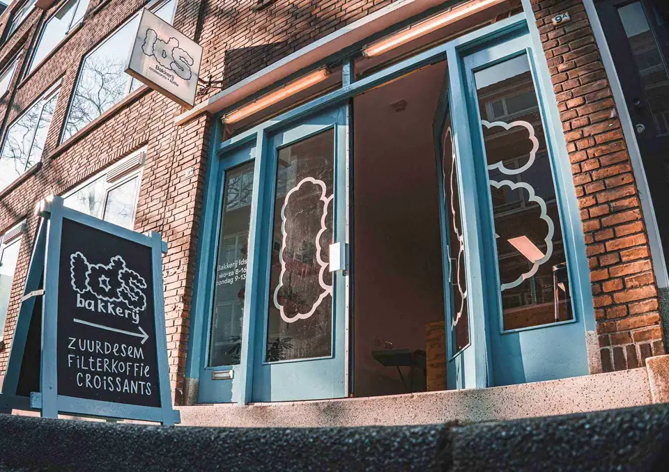
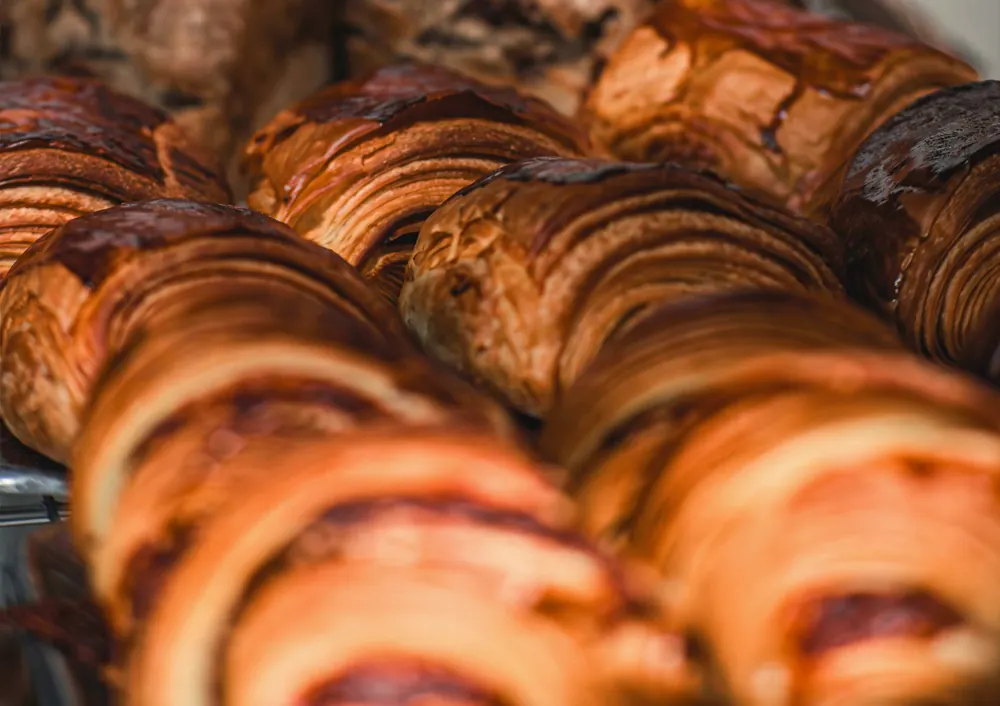

Noemt Ids de beste bakkerij van de buurt, en vindt de croissants beter dan in Frankrijk.

Je buurtbakker voor zuurdesem en croissants
Handgemaakt brood van biologische bloem, water, zout en zuurdesem, in het hart van Rotterdam-Noord.
Ligt het er vandaag?
Het menu wisselt elke week. Kies wat je zoekt en op welke dag je langskomt, dan staat je vraag klaar in WhatsApp.
1Waar heb je zin in?
2Welke precies?
3Wanneer kom je langs?
Maandag en dinsdag is de bakkerij dicht.
Wat er op de plank ligt
Zoals op het stoepbord voor de deur: zuurdesem, viennoiserie, iets zoets en filterkoffie.
Zuurdesembrood
Om erbij te drinken
- Filterkoffie van Schot
- Thee en ijsthee van Wilderland
Het menu wisselt elke week, maar veel klassiekers zijn altijd in de winkel.
Vernoemd naar opa Ids
De bakkerij is vernoemd naar opa Ids, die al bakker was in Friesland. Nu gaat de traditie verder aan de Treubstraat, als buurtbakker: een plek waar mensen een praatje met elkaar kunnen maken, en hopelijk niet alleen komen voor het brood en de croissants.
- Elk brood is handgemaakt, met alleen biologische bloem, water, zout en zuurdesem.
- Een lange rijs van 24 uur of langer geeft het brood zijn smaak en structuur.
- Zo veel mogelijk met lokale producten.

Waarom Ids
Zuurdesem en croissants
Klanten schrijven over het zuurdesem en de croissants; één review noemt de croissants beter dan in Frankrijk.
Al sinds de opening
Klanten schrijven dat ze al sinds de opening bij Ids komen.
Vlot, vriendelijk, klein terras
Klanten schrijven over snelle en vriendelijke bediening, en over het kleine terras.
Uit 143 Google-reviews
4,8★★★★★Bekijk op Google
Komt al bij Ids sinds de bakkerij openging.
Noemt het de beste bakkerij in de omgeving.
Samengevat uit reviews op Google, niet letterlijk geciteerd.
Zo vraag je het na
Kies je brood
Tik in de kiezer of op het bord aan wat je zoekt.
Kies je dag
Woensdag tot en met zaterdag van 8 tot 16 uur, zondag van 9 tot 13 uur.
Verstuur je appje
Je vraag staat klaar in WhatsApp; je verstuurt hem met één tik.
Vragen aan de toonbank
Wanneer is de bakkerij open?
Woensdag tot en met zaterdag van 8:00 tot 16:00 en zondag van 9:00 tot 13:00. Maandag en dinsdag is de bakkerij dicht.
Wat zit er in het brood?
Elk brood is handgemaakt en bevat alleen biologische bloem, water, zout en zuurdesem.
Waarom zuurdesem?
Door de lange rijs, van 24 uur of langer, krijgt het brood zijn karakteristieke smaak en structuur.
Is het assortiment elke week hetzelfde?
Het menu wisselt elke week, maar veel klassiekers zijn altijd in de winkel. Vraag het gerust even na via WhatsApp.
Kan ik er ook koffie halen?
Ja: filterkoffie van Schot, en thee en ijsthee van Wilderland.
Treubstraat 9B, Rotterdam-Noord
- Woensdag8:00 – 16:00
- Donderdag8:00 – 16:00
- Vrijdag8:00 – 16:00
- Zaterdag8:00 – 16:00
- Zondag9:00 – 13:00
- Maandagdicht
- Dinsdagdicht
Treubstraat 9B
3038 XW Rotterdam
De kaart komt van Google Maps en laadt pas als je klikt.
Vers desem halen?
Woensdag tot en met zondag aan de Treubstraat 9B. Even vragen of je favoriet er ligt? App of bel de bakkerij.